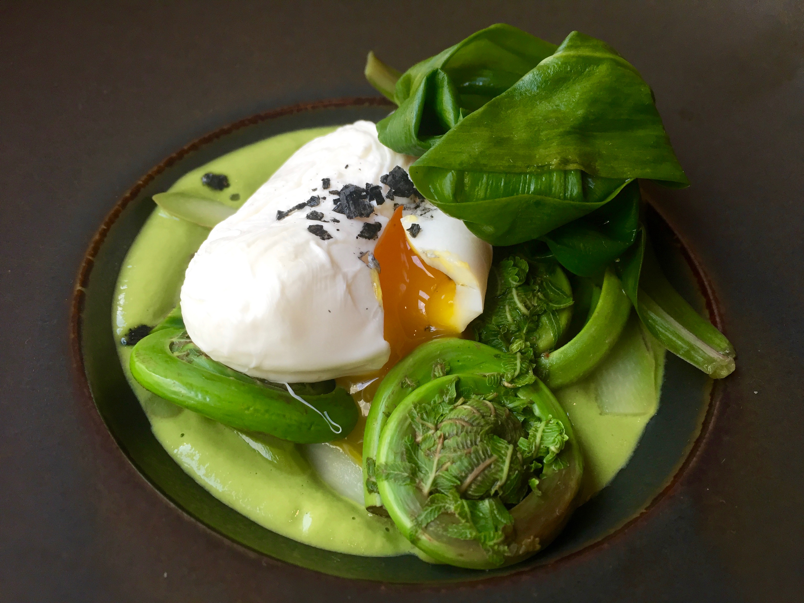

Flybrook Hudson Valley
Armonk, New York
A new American restaurant, bar and gathering place in the heart of downtown Armonk. Opening 2027.


Inspired · Seasonal · Organic · Local · Fresh
A new American restaurant group rooted in the seasonal bounty of the valley — a brick-and-mortar room in downtown Armonk, and a farm-based gathering place in the Catskills.
Field and stream to fork

Executive Chef Roxanne Spruance leads a kitchen built around ingredients grown on our own land and across the valley — a seasonally distinguished table set in two calm, biophilic rooms.
Two Locations
Flybrook Hudson Valley
A new American restaurant, bar and gathering place in the heart of downtown Armonk. Opening 2027.

Flybrook at Livingston Farm
A farm-based gathering place on 117 regenerative acres in the Catskills — long tables, open sky, and the harvest a few steps away.
Livingston Manor
From May through October, our 117-acre regenerative organic farm at 26 Hoag Road grows the vegetables, herbs and eggs that shape each day's menu — picked at dawn and on the table by lunch, in Armonk and at the farm itself.

A lookbook


Opening 2027
Join the waitlist for opening news, farm dinners, and a few seats held back for neighbors.